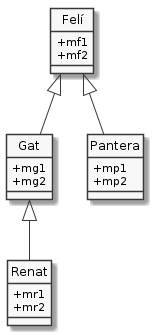

Interfície d'una classe
La interfície d'una classe està formada per tots els membres no privats que defineix la classe, més tots els membres no privats que hereta.
Considera el següent diagrama:

En UML, suposant que els membres són atributs, vindria a ser:

Veiem que la classe Felí defineix els membres mf1 i mf2. Aquests membres, en virtut de la relació d'herència, queden inclosos entre els membres de Gat i de Pantera. Així Gat disposa dels membres que defineix mg1 i mg2, més els heretats mf1 i mf2. És clar, Gat no disposa dels membres definits per altes subclasses de Felí, com ara el mp1 que defineix Pantera, tot i que comparteix amb aquesta els membres de Felí.
Finalment, Renat, en ser un Gat disposa dels membres mr1, mr2 (propis), més tots els de Gat (mg1, mg2, mf1 i mf2).
Com podem veure, Gat estén els membres de Felí amb els membres
propis. És a dir, Gat inclou tota la definició de Felí, i a més
a més, l'amplia amb nous continguts.
Concretem una mica. Suposem que disposem de les següents definicions de classe:
1class Felí {
2 /* … */
3 public void menja(Menjar m) { System.out.println("Nyam Nyam " + m); }
4 /* … */
5}
6
7class Gat extends Felí {
8 public void miola() { System.out.println("MEEEEEEU"); }
9}
10
11class UsaGat {
12 public static void main(String[] args) {
13 Gat gat = new Gat();
14 gat.miola();
15 gat.menja(new Menjar());
16 }
17}
En aquest exemple podem observar com, des de la classe UsaGat podem
accedir a un membre de Gat (el mètode menja()) que no ha estat
definit a Gat sinó a la seva superclasse Felí. Fixem-nos en que
l'accés a un mètode heretat de Gat des de UsaGat és idèntic a
l'accés a un mètode definit per Gat.